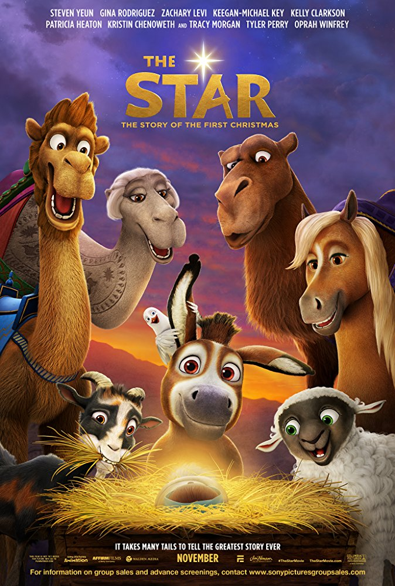
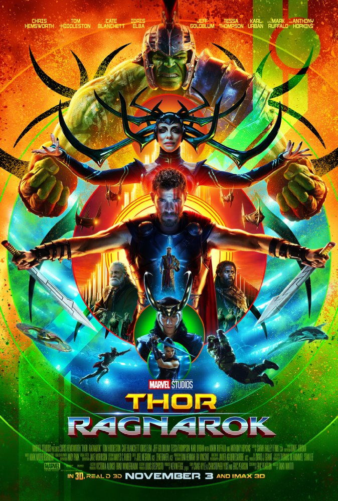

Movies
Justice League
Fueled by his restored faith in humanity and inspired by Superman's selfless act, Bruce Wayne enlists the help of his newfound ally, Diana Prince, to face an even greater enemy. The Star
A small but brave donkey and his animal friends become the unsung heroes of the first Christmas.
Storyline
In Sony Pictures Animation's THE STAR, a small but brave donkey named Bo yearns for a life beyond his daily grind at the village mill. One day he finds the courage to break free, and finally goes on the adventure of his dreams. On his journey, he teams up with Ruth, a lovable sheep who has lost her flock and Dave, a dove with lofty aspirations. Along with three wisecracking camels and some eccentric stable animals, Bo and his new friends follow the Star and become accidental heroes in the greatest story ever told - the first Christmas. Written by Teaser-Trailer.com.
Release Date
17 November 2017
Genre
Comedy, Animation, Adventure
 Thor Ragnarok
Imprisoned, the almighty Thor finds himself in a lethal gladiatorial contest against the Hulk, his former ally. Thor must fight for survival and race against time to prevent the all-powerful Hela from destroying his home and the Asgardian civilization..
Storyline
Thor is imprisoned on the other side of the universe and finds himself in a race against time to get back to Asgard to stop Ragnarok, the destruction of his homeworld and the end of Asgardian civilization, at the hands of an all-powerful new threat, the ruthless Hela.
Release Date
2 November 2017
Genre
Comedy, Animation, Action
Daddy's Home 2
Having finally gotten used to each other's existence, Brad and Dusty must now deal with their intrusive fathers during the holidays.
Storyline
Having finally gotten used to each other's existence, Brad and Dusty must now deal with their intrusive fathers during the holidays.
Release Date
10 November 2017
Genre
Comedy